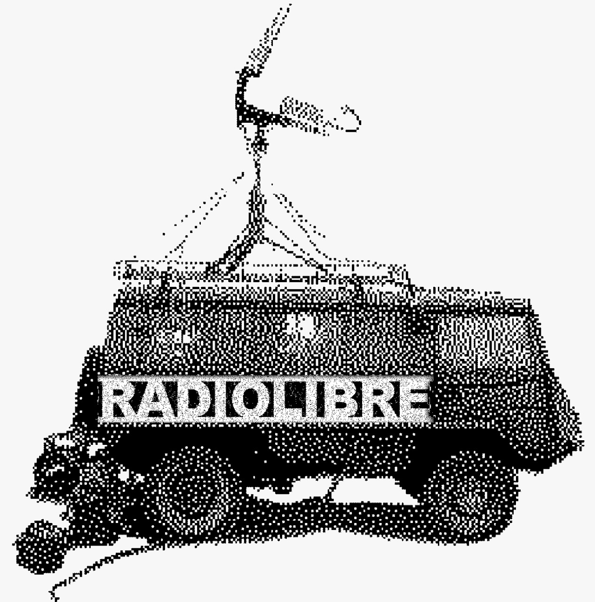

La Radio, lugar común
Creamos de manera colaborativa transmisiones para compartir lo que esté pasando. Shared net.radio streams by socially involved groups from *SubAmerica. #TodoEsRadio!

Creamos de manera colaborativa transmisiones para compartir lo que esté pasando. Shared net.radio streams by socially involved groups from *SubAmerica. #TodoEsRadio!
Enlazado con el grupo de Telegram de Radiolibre: lo que escribas también aparece allá. Actividad de las transmisiones en la bitácora.